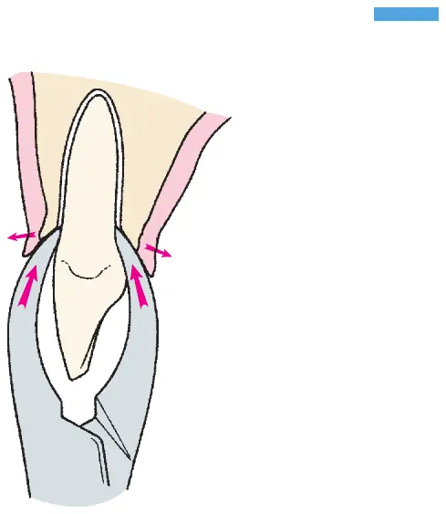
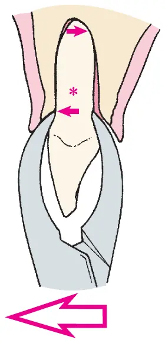

نسخه استخراجشده؛ ترجمه یا تأیید علمی انجام نشده است. وضعیت: captured
سه شرط بنیادی هر کشیدن خوب، هر تکنیکی که انتخاب کنی: ۱) دسترسی و دید کافی، ۲) مسیر بدون مانع برای خروج دندان، ۳) نیروی کنترلشده برای لوکسه و خارج کردن.

گام ۱ — شل کردن اتصال بافت نرم از ناحیهی سرویکال، با تیغه یا سر تیز الواتور پریوستئال شمارهی ۹. دو هدف: الف) اطمینان از بیحسی عمیق — به بیمار بگو جراحی شروع میشود و اولین کار کنار زدن بافت نرم است؛
در این مرحله کمی فشار حس میشود ولی نباید تیزی یا ناراحتی باشد. ب) اجازهی نشستن آپیکالیتر الواتور و فورسپس بدون گیر کردن به لثه؛ سالکوس پهنتر میشود و نوک بِوِلدار فک فورسپس راحت وارد میشود. پاپیلای مجاور را هم رفلکت کن تا با ورود الواتور مستقیم آسیب نبیند.
گام ۲ — لوکسیشن با الواتور (معمولاً مستقیم). الواتور عمود بر دندان وارد فضای بیندندانی میشود، تیغه به سمت آپیکال هدایت میشود، و با چرخشهای کوچک رفتوبرگشتی همراه فشار آپیکالی پیش میرود. اول الواتور کوچک، بعد بزرگتر. سپس همین کار در لاینانگل مزیوباکال و بعد دیستوباکال.
سه ممنوعیت گام ۲: الواسیون از سمت لینگوال یا پالاتال بهدلیل دسترسی بد کارایی محدودی دارد، هیچ الواسیونی در امتداد استخوان باکال انجام نشود چون بهراحتی میشکند یا کنترل از دست میرود و بافت نرم آسیب میبیند، و نیروی بیش از حد میتواند دندان مجاور را آسیب بزند یا جابهجا کند، بهویژه اگر ترمیم بزرگ یا پوسیدگی دارد.
و یک واقعیت که ناامیدت نکند: اگر دندان سالم است و دندانهای پایدارِ قدامی و خلفی دارد، حرکتی که با الواتور مستقیم میگیری حداقلی خواهد بود. این گام وقتی واقعاً کارساز است که دندان خلفی وجود نداشته باشد، یا تاجها آنقدر تخریب شده باشند که مانع حرکت نشوند، یا دندان مجاور هم قرار باشد همان جلسه کشیده شود.
گام ۳ — انطباق فورسپس. فک باید آناتومیک روی سطح ریشه، آپیکال به خط سرویکال بنشیند (استثنا: کاوهورن). اول فک لینگوال، بعد فک باکال، زیر بافت نرم شلشده — و مطمئن شو نوکها زیر بافتاند و دندان مجاور را نگرفتهاند. دسته را از انتها بگیر تا بیشترین مزیت مکانیکی و کنترل را داشته باشی. فک باید موازی محور طولی دندان باشد وگرنه احتمال شکستن ریشه بالا میرود.
گام ۴ — لوکسیشن با فورسپس. عمدهی نیرو به سمت نازکترین و ضعیفترین استخوان میرود: در تمام دندانهای ماگزیلا و همهی دندانهای مندیبل بهجز مولرها، حرکت اصلی لبیال و باکال است.
سه نکته که باید دوباره رویشان تأکید کرد: ۱) فورسپس باید تا حد ممکن آپیکالی بنشیند و در طول کشیدن بهطور دورهای دوباره نشانده شود، ۲) نیروهای باکال و لینگوال باید آهسته، سنجیده و پیوسته باشند، نه لرزاندنهای تند و پرشی، ۳) نیرو چند ثانیه نگه داشته شود تا استخوان فرصت گشاد شدن پیدا کند. جراحان مبتدی گرایش دارند فشار ناکافی را برای مدت ناکافی وارد کنند.
گام ۵ — خارج کردن. پس از گشاد شدن کافی، نیروی کششی خفیف معمولاً به سمت باکال. لوکسیشن و خارج کردن دو گام جداگانهاند و نقش اصلی فورسپس خارج کردن دندان نیست، گشاد کردن استخوان است تا ریشه بتواند بیرون بیاید.
دست دیگر (چپ، برای جراح راستدست) بیکار نیست: کنار زدن گونه و لب و زبان برای دید، محافظت از سایر دندانها اگر فورسپس ناگهان رها شد، تثبیت سر بیمار، حمایت و تثبیت فک پایین هنگام کشیدن دندانهای مندیبل (وگرنه نیروی لازم برای گشاد کردن استخوان سنگین مندیبل به TMJ آسیب میزند)، و حمایت زائدهی آلوئولار و دادن اطلاعات لمسی دربارهی میزان گشاد شدن.
دستیار: کنار زدن بافت نرم، ساکشن خون و بزاق و محلول شستوشو، محافظت از دندانهای قوس مقابل — بهویژه هنگام کشیدن دندانهای خلفی پایین که ممکن است دندان ناگهان رها شود و فورسپس به دندان بالا بخورد و کاسپ بشکند؛ دستیار نوک ساکشن یا انگشت را جلوی دندانهای بالا نگه میدارد، حمایت مندیبل اگر دست جراح درگیر است، و حمایت روانی بیمار.
وضعیت دست چپ. برای دندانهای چپ و قدامی بالا: انگشت اشاره لب و گونه را کنار میزند و شست روی زائدهی آلوئولار پالاتال مینشیند — اینطور دست چپ همزمان بافت را کنار میزند، سر را تثبیت میکند، آلوئول را حمایت میکند و اطلاعات لمسی میدهد. در مولر بالا اغلب آزاد شدن ریشهی پالاتال را با دست چپ زودتر از فورسپس حس میکنی.

برای سمت راست جایشان عوض میشود: اشاره روی کام، شست روی باکال. در مولر پایین: اشاره در وستیبول باکال، انگشت دوم در وستیبول لینگوال، و شست زیر چانه تا مندیبل بین انگشتها و شست گرفته شود — اطلاعات لمسی کمتر میشود ولی نیاز به حمایت مندیبل بر نیاز به حمایت آلوئول ارجحیت دارد.
ماگزیلا
مندیبل
دندان شیری. ریشهها بلند و ظریف و مستعد شکستناند، بهویژه چون دندان جانشین بخش تاجی ریشه را تحلیل برده و ضعیفش کرده. فورسپس 150S و 151S. حرکت آهسته و پیوسته باکال و برگشت لینگوال؛
چرخش حداقلی و در دندان چندریشه با احتیاط. مسیر کممقاومت را پیدا کن و دندان را در همان مسیر تحویل بده. اگر ریشههای مولر شیری تاج پرمولر دائمی را در آغوش گرفتهاند، به سکشن کردن دندان فکر کن — بهندرت این ریشهها آنقدر محکم پرمولر را میگیرند که آن را لق یا خارج کنند.
مراقبت ساکت پس از کشیدن